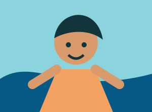
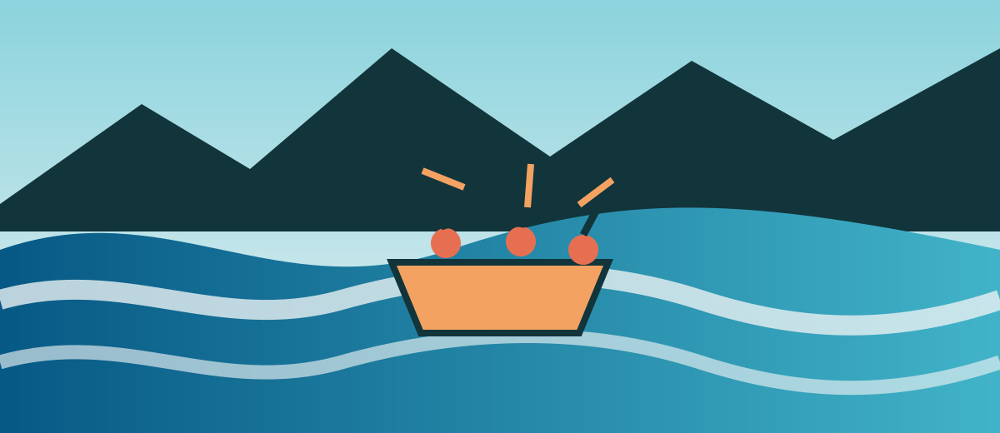

We believe the best stories begin where the road ends. Riverstone Rapids leads bold, responsible adventures through Uganda's unforgettable waterways, pairing expert guides with wild scenery and warm, local hospitality.


We believe the best stories begin where the road ends. Riverstone Rapids leads bold, responsible adventures through Uganda's unforgettable waterways, pairing expert guides with wild scenery and warm, local hospitality.
Riverstone Rapids began with a borrowed raft, a hand-drawn map, and a promise to share the river with care. Since our first expedition, our guides have welcomed curious travelers to the water while supporting local communities and protecting the landscapes that make every rapid special.